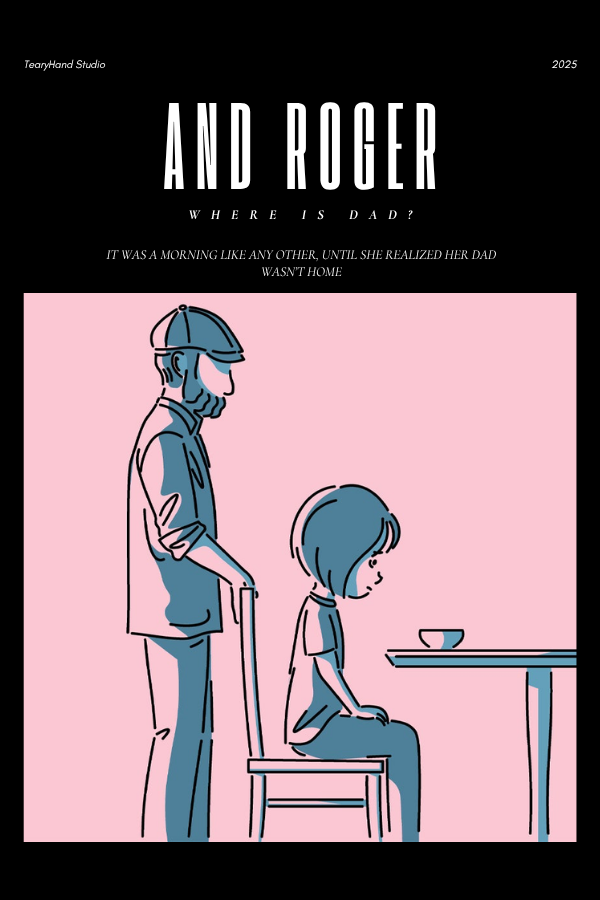

And Roger
Every archived year-end list appearance, including placement and points earned.
About the Game
and Roger is an interactive novel that lets you see through the protagonist's eyes—whether what she sees makes sense or not. It is comprised of three chapters and can be played in its entirety in about one hour.StoryIt's just another morning for this young girl. She wakes up and starts getting herself ready while shaking off the sleepiness like always. Except something, somehow, feels off.When she steps into the living room, she expects to find her dad preparing for work. Instead, she finds a stranger sleeping on the couch.The man wakes up, looks at the girl, and sighs. Ignoring her confusion, he mumbles to himself with a hint of sadness in his voice.Scared, the girl runs. She must leave the house.She doesn't know who this man is or where her father has gone.Walk alongside her on this twisting, twisted path and see where it will lead her.
| Released | 2025-07-23 |
|---|---|
| Developer | Tearyhand studio |
| Publisher | Kodansha |
| Genres | Adventure, Simulation, Casual, Indie |
| Platforms | macOS, PC |
SingleplayerSteam AchievementsSteam CloudAtmospheric2DHorrorFemale ProtagonistAnimePoint & ClickFamily FriendlyCuteChoices Matter
Where to Buy
Game information provided by RAWG.
Points by Year
List History
| Year | Source | List | Placement | Points |
|---|---|---|---|---|
| 2025 | Polygon | The 50 best games of 2025, as chosen by Polygon | 21 | 3 |
| 2025 | Slant Magazine | The Best Video Games of 2025 | 9 | 5 |
| 2025 | SUPERJUMP | 50 Outstanding Games Released in 2025 | Unranked | 1 |